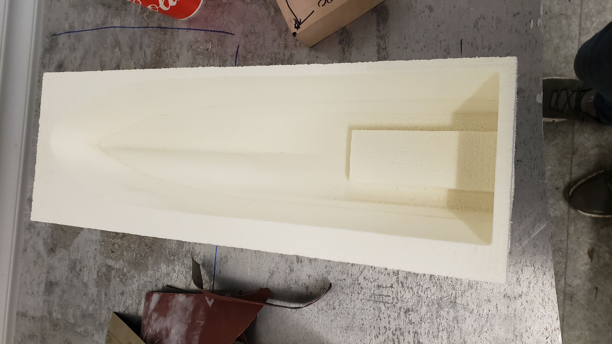
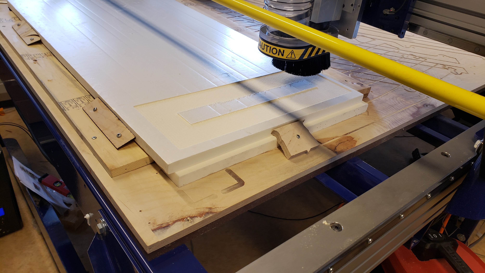
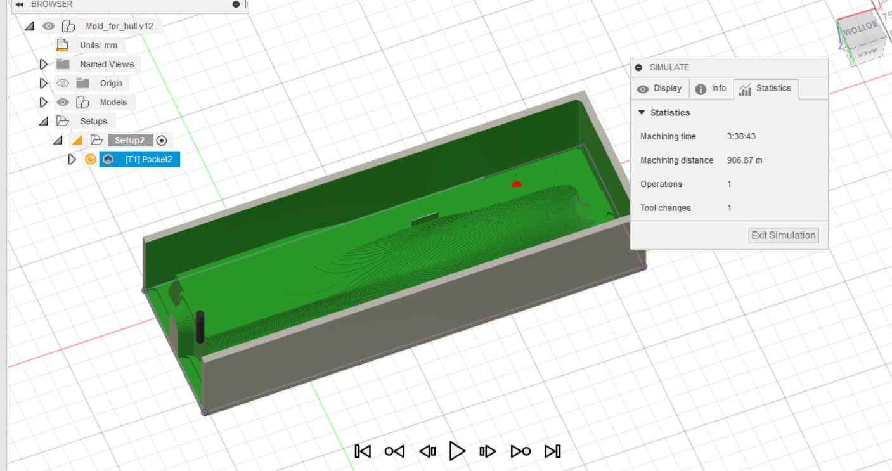
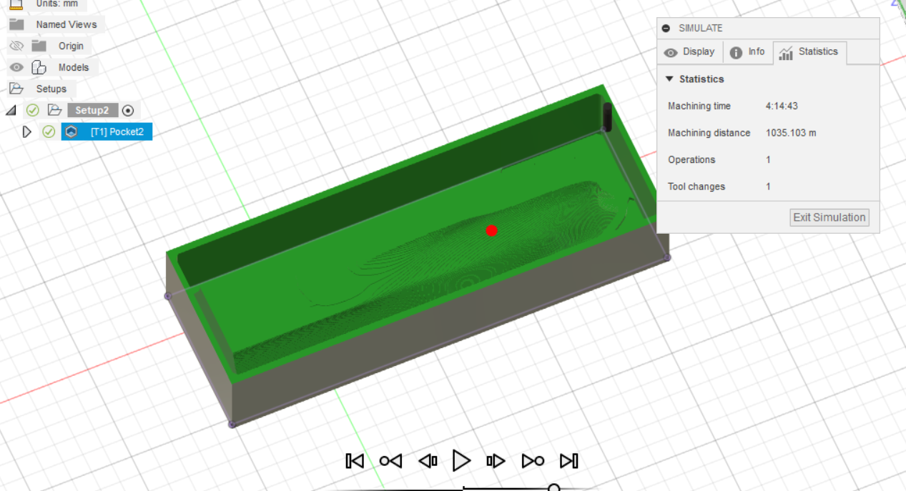
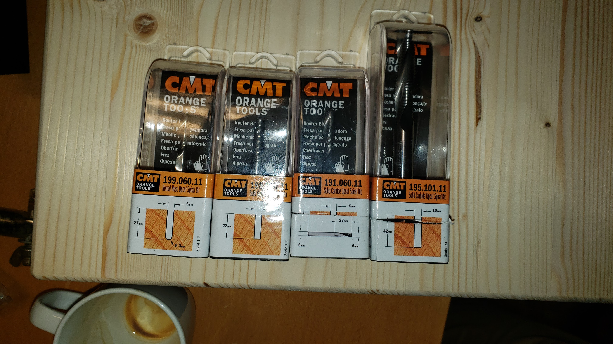
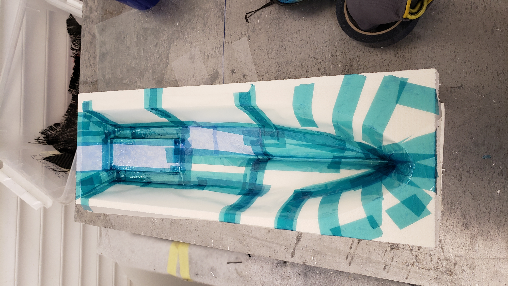
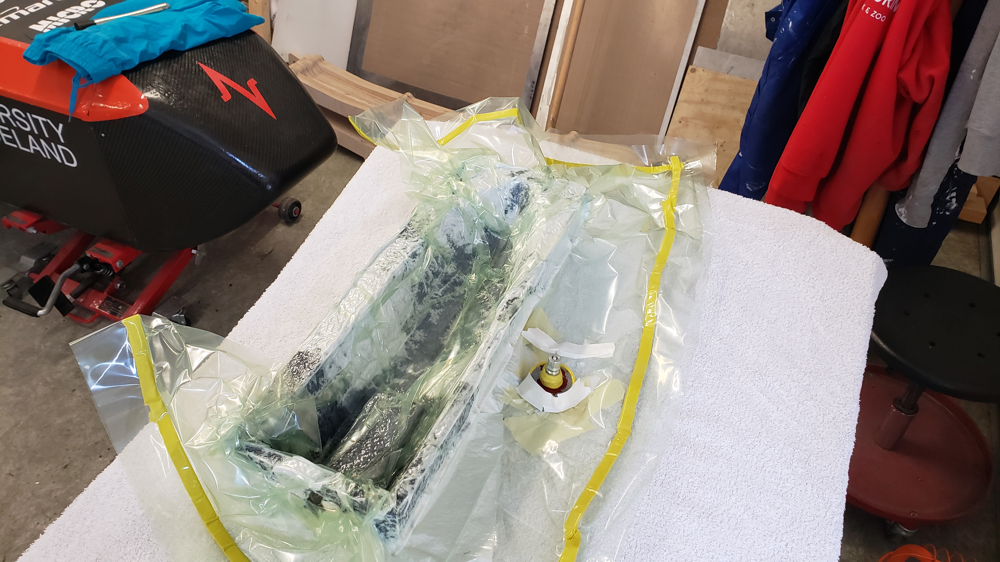
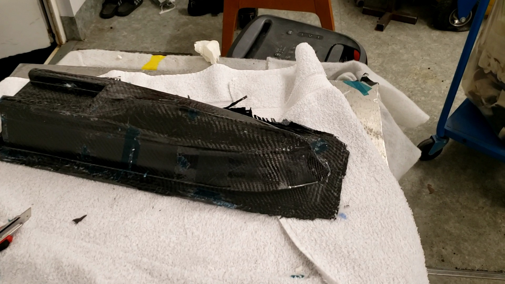
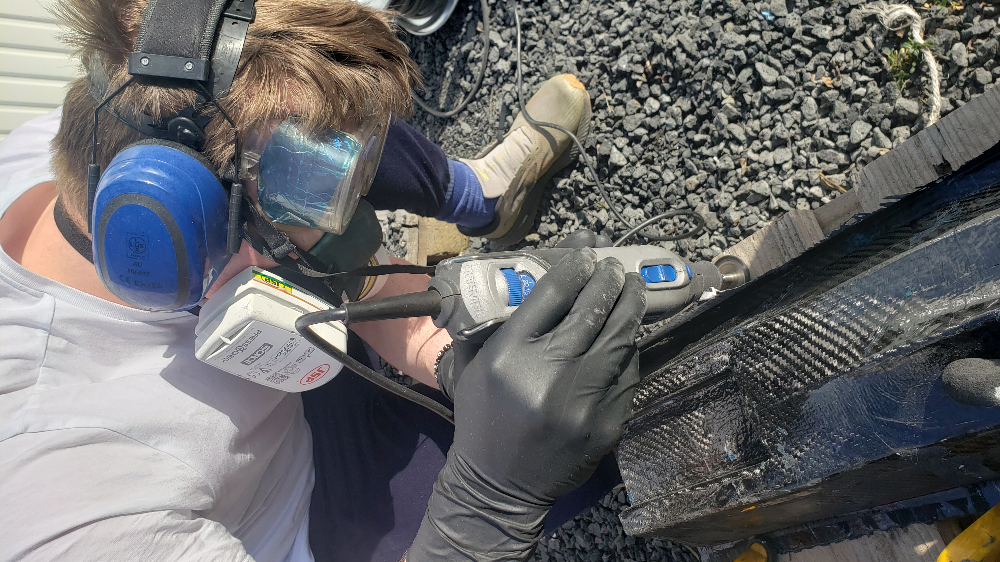

Introduction and design criteria
 When designing the hull we had many goals which would all contribute to the function of the boat, the following is a list of the original goals:
- Waterproof
- Needs to float (not too heavy)
- Small
- Fits all parts (assembly)
- Fluid dynamic
- And more
- Waterproof (after school ends)
- Needs to float (to heavy, barely floats)
- Small to medium
- Fits all parts (not an issue)
- Fluid dynamic
- Focus on the subject in the course Computer supported production
Design (pre calculations and assesments)
Basic comparison calculations were done and it was clear that our boat compared to the Traxxas blast (smallest of the 3 RC boats) and was a lot denser than theirs. Traxxas blast is 800 g and the box density is 110 g / dm^3. Our boat is over 1500 g ??? and closer to 300 g/dm^3, which is why it sits low in the video and goes slow. After the boat had been designed and the toolpaths were ready we found a video on youtube that shows how to determine boat size from boat mass. I recomend watching that video before designing a RC boat. We increased the volume of the boat slightly to make it less dense. We will make the boat lighter and try more powerfull motors during the summer.
Fusion drawing + Aesthetics
Frosti started with a basic drawing of the boat large enough to fit all parts then Arnór improved it by making it more aesthetic. Arnór was taking a second class in computer drawing at the time and drew it from a photo of a boat from Rafnar. One of the hardest part of drawing the hull was making it fluid dynamic (smooth curves). There are a lot of smooth edges which require more practice. To improve your drawing skills beyond basic stuff (Tölvuteikning), Arnór recommends taking a follow up class (Tölvuvædd Hönnun). YouTube videos are also your friend (in our excel workbook we have a list of YouTube videos and important URL codes).
CNC milling and toolpaths (Frosti)
  Beggining of the toolpaths with a few errors. When we were doing these toolpaths we did not know the mill size and specifics. After we got the mill size and material specifics we adjusted the toolpaths. In the picture you can see that the mill cuts material which is not supposed to be cut. To fix that we adjust the machining boundary in Fusion manufacturing.   2 photos from fusion 360
- Shopbot specifics
- Milling specifics
- Safety (MSDS)
- machine time 45 min
- rough cut
- 10mm flat end
- machine time 55 min (was 90 min when manufactured)
- fine cut curves
- 6mm ball end, 3mm radius
Carbon fiber hull (Frosti)
   
- Preevaluation
- Safety
- Brief description of carbon fiber
- Pictures
- Wet layup proccess (Óðinn)
- Post evaluation
Results and post evaluation
If we were to do the project all over again we would put more effort in making sure the boat works properly. We would do smaller tests and a scalable smaller model. The edges at the back of the boat were too sharp (not filleted) which caused a problem when making the carbon fiber hull. It is not waterproof at the back of the boat because the carbon fiber was cut at the sharp edges. To fix that we will add resin and hope it becomes waterproof.
- What would we do different
- What have we learned in Tölvustudd framleiðsla